Metric 09 - Post-depreciation Profitability Margin
April 8, 2022
## Error in local:core <- readRDS("02-data-wrangled/core.rds"): could not find function ":<-"
Metric Construction
Definition & Interpretation
\[Post\text-Depreciation \: Profitability \: Margin = \frac{Totale \: Revenue- Total \: Expenses}{Total \: Revenue} \]
Post-depreciation profit is an income measure used to determine profit after incorporating non-cash expenses on a balance sheet. Post-depreciation profit is calculated because it provides a picture of an organization’s true available profits net of depreciation expenses. Non-expense items lower an organization’s reported earnings, so a post-depreciation profit would show a lower profit in comparison to profits calculated prior to depreciation expenses.
High values in this metric are generally desirable since they indicate that an organization is not losing a lot of its revenues to expenses. Values close to zero are normal, and negative numbers indicate the organization is functioning at a deficit.
Variables
Note: This data is available only for organizations that file full 990s. [Organizations with revenues <$200,000 and total assets <$500,000 have the option to not file a full 990 and file an EZ instead.]
Numerator: Total Revenue - Total Functional Expenses
- On 990: Part VIII, line 12A - Part IX, line 25A
- SOI PC EXTRACTS: totrevenue - totfuncexpns
- SOI PC EXTRACTS: totrevenue - totfuncexpns
- On EZ:Not available
- On 990: Part VIII, line 12A - Part IX, line 25A
Denominator: Total Revenue
On 990: Part VIII, Line 12A -SOI PC EXTRACTS: totrevenue
On EZ: Part I, line 9 -SOI PC EXTRACTS: totrevnue
# TEMPORARY VARIABLES
postd_profits <- ( core$totrevenue-core$totfuncexpns)
revenue <- ( core$totrevenue)
# can't divide by zero
revenue[ revenue == 0 ] <- NA
# SAVE RESULTS
core$postd_profitmargin <- postd_profits / revenue
# summary( core$postd_profitmargin )Standardize Scales
Check high and low values to see what makes sense.
x.05 <- quantile( core$postd_profitmargin, 0.05, na.rm=T )
x.95 <- quantile( core$postd_profitmargin, 0.95, na.rm=T )
ggplot( core, aes(x = postd_profitmargin ) ) +
geom_density( alpha = 0.5) +
xlim( x.05, x.95 ) 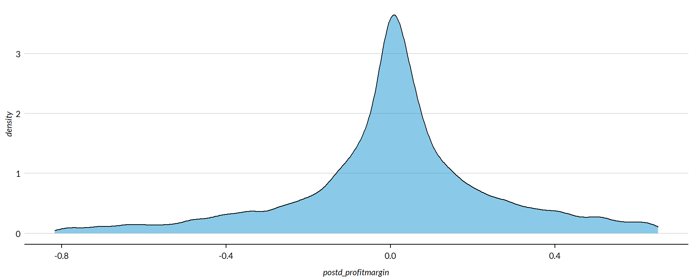
core2 <- core
# proportion of values that are negative
mean( core2$postd_profitmargin < 0, na.rm=T )
## [1] 0.4516837
core2$postd_profitmargin[ core2$postd_profitmargin < 0 ] <- 0
# proption of values above 200%
mean( core2$postd_profitmargin > 50, na.rm=T )
## [1] 0.0003660322
core2$postd_profitmargin[ core2$postd_profitmargin > 50 ] <- 50
x.05 <- quantile( core$postd_profitmargin, 0.05, na.rm=T )
x.95 <- quantile( core$postd_profitmargin, 0.95, na.rm=T )
core2 <- core
# proportion of values that are negative
# mean( core2$der < 0, na.rm=T )
# proption of values above 1%
# mean( core2$der > 5, na.rm=T )
# WINSORIZATION AT 5th and 95th PERCENTILES
core2$postd_profitmargin[ core2$postd_profitmargin < x.05 ] <- x.05
core2$postd_profitmargin[ core2$postd_profitmargin > x.95 ] <- x.95Metric Scope
Tax data is available for full 990 filers, so this metric does not describe any organizations with Gross receipts < $200,000 and Total assets < $500,000. Some organizations with receipts or assets below those thresholds may have filed a full 990, but these would be exceptions.
The data have been capped to those with values between 5% and 95% of the normal distribution to cut off outliers and exempt organizations with zero profitability (though negative values are allowed still).
Reference
Any cited works here…
Descriptive Statistics
Convert all monetary variables to thousands of dollars. Scale metric up (multiply by 100) for readability.
core2 %>%
mutate( # postd_profitmargin = postd_profitmargin * 10000,
totrevenue = totrevenue / 1000,
totfuncexpns = totfuncexpns / 1000,
lndbldgsequipend = lndbldgsequipend / 1000,
totassetsend = totassetsend / 1000,
totliabend = totliabend / 1000,
totnetassetend = totnetassetend / 1000 ) %>%
select( STATE, NTEE1, NTMAJ12,
postd_profitmargin,
AGE,
totrevenue, totfuncexpns,
lndbldgsequipend, totassetsend,
totnetassetend, totliabend ) %>%
stargazer( type = s.type,
digits=0,
summary.stat = c("min","p25","median",
"mean","p75","max", "sd"),
covariate.labels = c("Post-Depreciation Profitability Margin (x100)", "Age",
"Revenue ($1k)", "Expenses($1k)",
"Buildings ($1k)", "Total Assets ($1k)",
"Net Assets ($1k)", "Liabiliies ($1k)"))| Statistic | Min | Pctl(25) | Median | Mean | Pctl(75) | Max | St. Dev. |
| Post-Depreciation Profitability Margin (x100) | -1 | -0 | 0 | -0 | 0 | 1 | 0 |
| Age | 3 | 22 | 30 | 32 | 41 | 95 | 15 |
| Revenue (1k) | -5,377 | 259 | 909 | 4,522 | 3,672 | 408,932 | 14,286 |
| Expenses(1k) | 0 | 263 | 840 | 4,192 | 3,328 | 382,667 | 13,466 |
| Buildings (1k) | -4 | 79 | 824 | 3,504 | 2,868 | 513,509 | 13,210 |
| Total Assets (1k) | -7,552 | 778 | 2,446 | 9,262 | 7,477 | 672,021 | 27,039 |
| Net Assets (1k) | -178,870 | 156 | 1,094 | 4,553 | 4,079 | 531,068 | 15,470 |
| Liabiliies (1k) | -2,707 | 115 | 816 | 4,709 | 3,133 | 705,623 | 18,722 |
What proportion of orgs have post-depreciation profitability margins equal to zero?
prop.zero <- mean( core2$postd_profitmargin == 0, na.rm=T )In the sample, 0 percent of the organizations have post-depreciation profitability margins equal to zero. These organizations are dropped from subsequent graphs to keep the visualizations clean. The interpretation of the graphics should be the distributions of post-depreciation profitability margins for organizations that have positive or negative values.
###
### ADD QUANTILES
###
### function create_quantiles() defined in r-functions.R
core2$exp.q <- create_quantiles( var=core2$totfuncexpns, n.groups=5 )
core2$rev.q <- create_quantiles( var=core2$totrevenue, n.groups=5 )
core2$asset.q <- create_quantiles( var=core2$totnetassetend, n.groups=5 )
core2$age.q <- create_quantiles( var=core2$AGE, n.groups=5 )
core2$land.q <- create_quantiles( var=core2$lndbldgsequipend, n.groups=5 )Post-Depreciation Profitability Margin Density
min.x <- min( core2$postd_profitmargin, na.rm=T )
max.x <- max( core2$postd_profitmargin, na.rm=T )
ggplot( core2, aes(x = postd_profitmargin )) +
geom_density( alpha = 0.5 ) +
xlim( min.x, max.x ) +
xlab( variable.label ) +
theme( axis.title.y=element_blank(),
axis.text.y=element_blank(),
axis.ticks.y=element_blank() )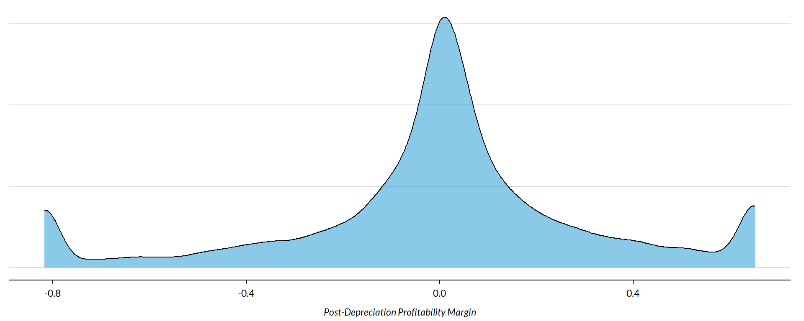
Post-Depreciation Profitability Margin by NTEE Major Code
core3 <- core2 %>% filter( ! is.na(NTEE1) )
table( core3$NTEE1) %>% sort(decreasing=TRUE) %>% kable()| Var1 | Freq |
|---|---|
| Housing | 2837 |
| Community Development | 1585 |
| Human Services | 1102 |
t <- table( factor(core3$NTEE1) )
df <- data.frame( x=Inf, y=Inf,
N=paste0( "N=", as.character(t) ),
NTEE1=names(t) )
ggplot( core3, aes( x=postd_profitmargin ) ) +
geom_density( alpha = 0.5) +
# xlim( -0.1, 1 ) +
labs( title="Nonprofit Subsectors" ) +
xlab( variable.label ) +
facet_wrap( ~ NTEE1, nrow=1 ) +
theme_minimal( base_size = 15 ) +
theme( axis.title.y=element_blank(),
axis.text.y=element_blank(),
axis.ticks.y=element_blank(),
strip.text = element_text( face="bold") ) + # size=20
geom_text( data=df,
aes(x, y, label=N ),
hjust=2, vjust=3,
color="gray60", size=6 )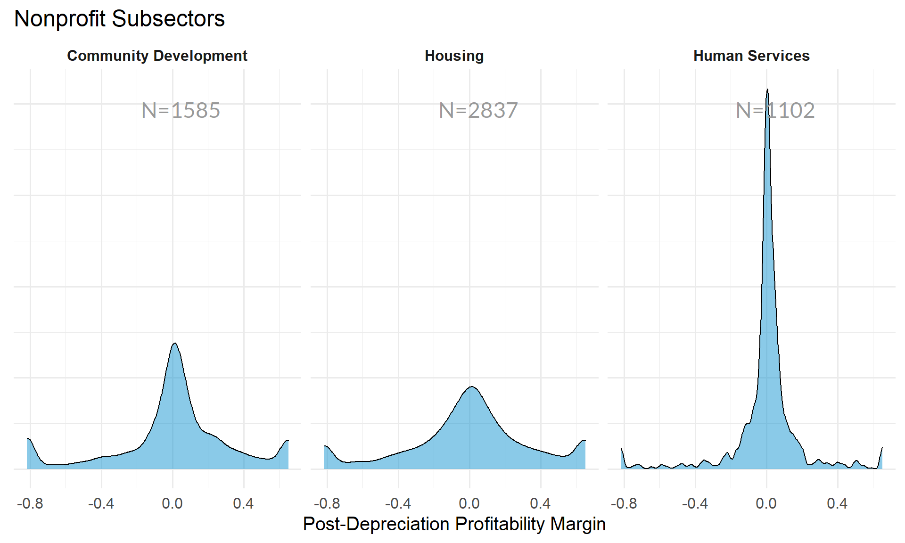
Post-Depreciation Profitability Margin by Region
table( core2$Region) %>% kable()| Var1 | Freq |
|---|---|
| Midwest | 1444 |
| Northeast | 1368 |
| South | 1610 |
| West | 1088 |
t <- table( factor(core2$Region) )
df <- data.frame( x=Inf, y=Inf,
N=paste0( "N=", as.character(t) ),
Region=names(t) )
core2 %>%
filter( ! is.na(Region) ) %>%
ggplot( aes(postd_profitmargin) ) +
geom_density( alpha = 0.5 ) +
xlab( "Census Regions" ) +
ylab( variable.label ) +
facet_wrap( ~ Region, nrow=3 ) +
theme_minimal( base_size = 22 ) +
theme( axis.title.y=element_blank(),
axis.text.y=element_blank(),
axis.ticks.y=element_blank() ) +
geom_text( data=df,
aes(x, y, label=N ),
hjust=2, vjust=3,
color="gray60", size=6 )table( core2$Division ) %>% kable()| Var1 | Freq |
|---|---|
| East North Central | 1038 |
| East South Central | 289 |
| Middle Atlantic | 904 |
| Mountain | 303 |
| New England | 464 |
| Pacific | 785 |
| South Atlantic | 900 |
| West North Central | 406 |
| West South Central | 421 |
t <- table( factor(core2$Division) )
df <- data.frame( x=Inf, y=Inf,
N=paste0( "N=", as.character(t) ),
Division=names(t) )
core2 %>%
filter( ! is.na(Division) ) %>%
ggplot( aes(postd_profitmargin) ) +
geom_density( alpha = 0.5 ) +
xlab( "Census Sub-Regions (10)" ) +
ylab( variable.label ) +
facet_wrap( ~ Division, nrow=3 ) +
theme_minimal( base_size = 22 ) +
theme( axis.title.y=element_blank(),
axis.text.y=element_blank(),
axis.ticks.y=element_blank() ) +
geom_text( data=df,
aes(x, y, label=N ),
hjust=2, vjust=3,
color="gray60", size=6 ) 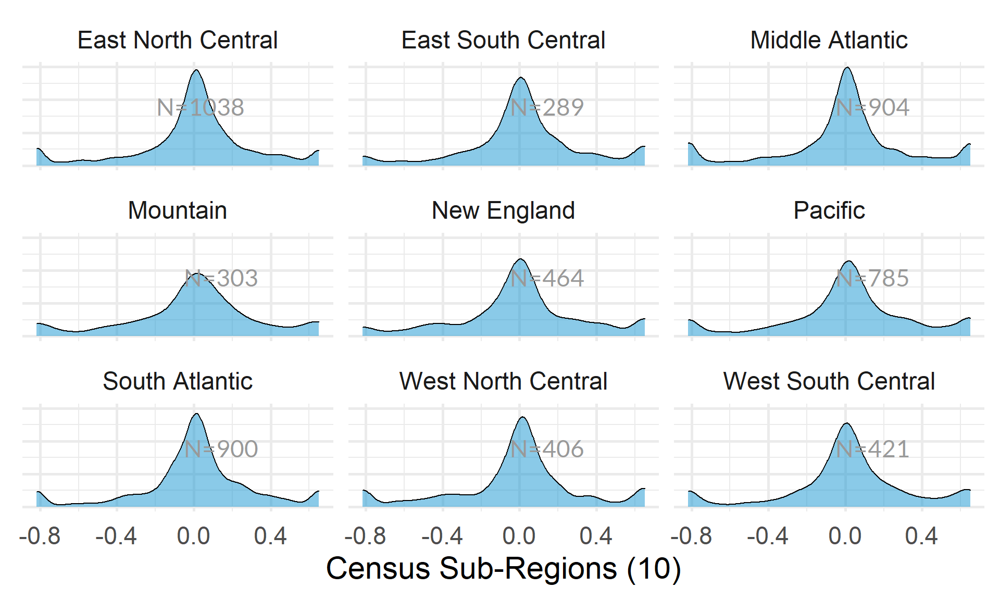
Post-Depreciation Profitability Margin by Nonprofit Size (Expenses)
ggplot( core2, aes(x = totfuncexpns )) +
geom_density( alpha = 0.5 ) +
xlim( quantile(core2$totfuncexpns, c(0.02,0.98), na.rm=T ) )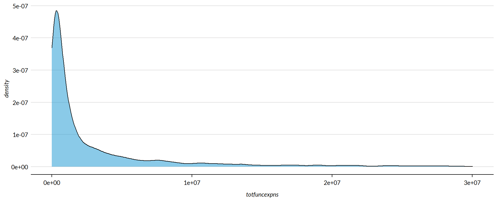
core2$totfuncexpns[ core2$totfuncexpns < 1 ] <- 1
# core2$totfuncexpns[ is.na(core2$totfuncexpns) ] <- 1
if( nrow(core2) > 10000 )
{
core3 <- sample_n( core2, 10000 )
} else
{
core3 <- core2
}
jplot( log10(core3$totfuncexpns), core3$postd_profitmargin,
xlab="Nonprofit Size (logged Expenses)",
ylab=variable.label,
xaxt="n", xlim=c(3,10) )
axis( side=1,
at=c(3,4,5,6,7,8,9,10),
labels=c("1k","10k","100k","1m","10m","100m","1b","10b") )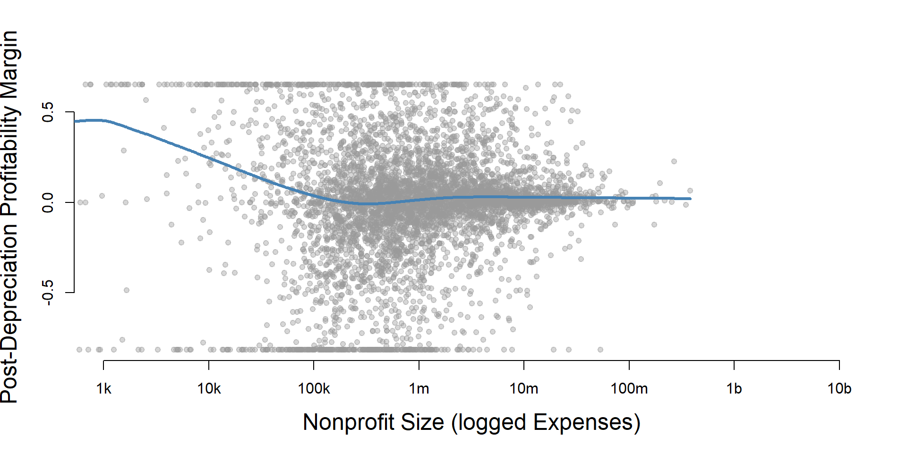
core2 %>%
filter( ! is.na(exp.q) ) %>%
ggplot( aes(postd_profitmargin) ) +
geom_density( alpha = 0.5) +
labs( title="Nonprofit Size (logged expenses)" ) +
xlab( variable.label ) +
facet_wrap( ~ exp.q, nrow=3 ) +
theme_minimal( base_size = 22 ) +
theme( axis.title.y=element_blank(),
axis.text.y=element_blank(),
axis.ticks.y=element_blank() )Post-Depreciation Profitability Margin by Nonprofit Size (Revenue)
ggplot( core2, aes(x = totrevenue )) +
geom_density( alpha = 0.5 ) +
xlim( quantile(core2$totrevenue, c(0.02,0.98), na.rm=T ) ) +
theme( axis.title.y=element_blank(),
axis.text.y=element_blank(),
axis.ticks.y=element_blank() )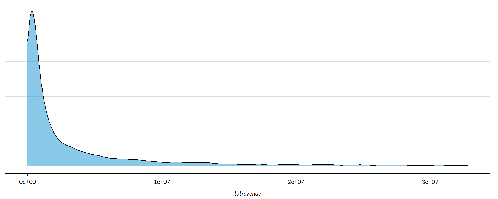
core2$totrevenue[ core2$totrevenue < 1 ] <- 1
if( nrow(core2) > 10000 )
{
core3 <- sample_n( core2, 10000 )
} else
{
core3 <- core2
}
jplot( log10(core3$totrevenue), core3$postd_profitmargin,
xlab="Nonprofit Size (logged Revenue)",
ylab=variable.label,
xaxt="n", xlim=c(3,10) )
axis( side=1,
at=c(3,4,5,6,7,8,9,10),
labels=c("1k","10k","100k","1m","10m","100m","1b","10b") )core2 %>%
filter( ! is.na(rev.q) ) %>%
ggplot( aes(postd_profitmargin) ) +
geom_density( alpha = 0.5 ) +
labs( title="Nonprofit Size (logged revenues)" ) +
xlab( variable.label ) +
facet_wrap( ~ rev.q, nrow=3 ) +
theme_minimal( base_size = 22 ) +
theme( axis.title.y=element_blank(),
axis.text.y=element_blank(),
axis.ticks.y=element_blank() )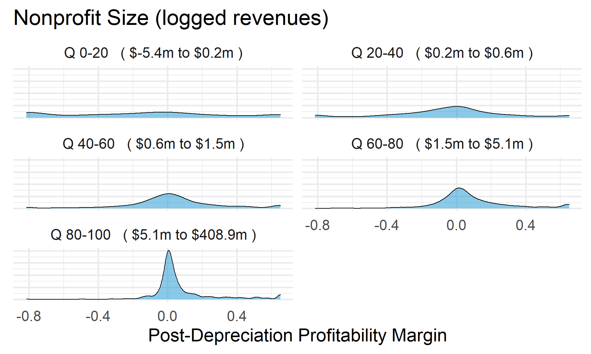
Post-Depreciation Profitability Margin by Nonprofit Size (Net Assets)
ggplot( core2, aes(x = totnetassetend )) +
geom_density( alpha = 0.5) +
xlim( quantile(core2$totnetassetend, c(0.02,0.98), na.rm=T ) ) +
xlab( "Net Assets" ) +
theme( axis.title.y=element_blank(),
axis.text.y=element_blank(),
axis.ticks.y=element_blank() )
core2$totnetassetend[ core2$totnetassetend < 1 ] <- NA
if( nrow(core2) > 10000 )
{
core3 <- sample_n( core2, 10000 )
} else
{
core3 <- core2
}
jplot( log10(core3$totnetassetend), core3$postd_profitmargin,
xlab="Nonprofit Size (logged Net Assets)",
ylab=variable.label,
xaxt="n", xlim=c(3,10) )
axis( side=1,
at=c(3,4,5,6,7,8,9,10),
labels=c("1k","10k","100k","1m","10m","100m","1b","10b") )
core2$totnetassetend[ core2$totnetassetend < 1 ] <- NA
core2$asset.q <- create_quantiles( var=core2$totnetassetend, n.groups=5 )
core2 %>%
filter( ! is.na(asset.q) ) %>%
ggplot( aes(postd_profitmargin) ) +
geom_density( alpha = 0.5 ) +
labs( title="Nonprofit Size (logged net assets, if assets > 0)" ) +
xlab( variable.label ) +
ylab( "" ) +
facet_wrap( ~ asset.q, nrow=3 ) +
theme_minimal( base_size = 22 ) +
theme( axis.title.y=element_blank(),
axis.text.y=element_blank(),
axis.ticks.y=element_blank() )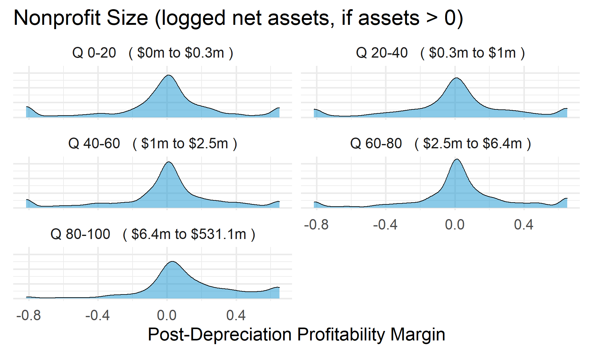
Total Assets for Comparison
core2$totassetsend[ core2$totassetsend < 1 ] <- NA
core2$tot.asset.q <- create_quantiles( var=core2$totassetsend, n.groups=5 )
if( nrow(core2) > 10000 )
{
core3 <- sample_n( core2, 10000 )
} else
{
core3 <- core2
}
jplot( log10(core3$totassetsend), core3$postd_profitmargin,
xlab="Nonprofit Size (logged Total Assets)",
ylab=variable.label,
xaxt="n", xlim=c(3,10) )
axis( side=1,
at=c(3,4,5,6,7,8,9,10),
labels=c("1k","10k","100k","1m","10m","100m","1b","10b") )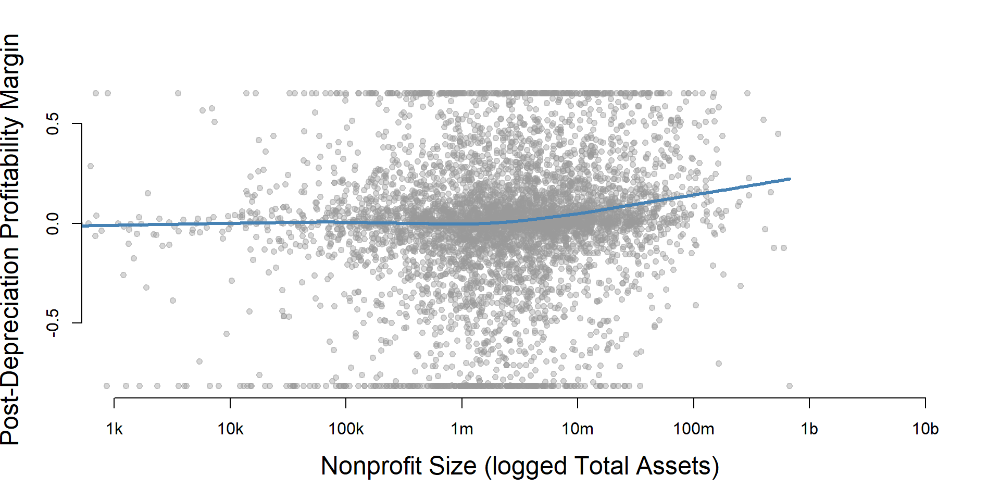
ggplot( core2, aes(x = totassetsend )) +
geom_density( alpha = 0.5) +
xlim( quantile(core2$totassetsend, c(0.02,0.98), na.rm=T ) ) +
xlab( "Net Assets" ) +
theme( axis.title.y=element_blank(),
axis.text.y=element_blank(),
axis.ticks.y=element_blank() )
core2 %>%
filter( ! is.na(tot.asset.q) ) %>%
ggplot( aes(postd_profitmargin) ) +
geom_density( alpha = 0.5 ) +
xlab( "Nonprofit Size (logged total assets, if assets > 0)" ) +
ylab( variable.label ) +
facet_wrap( ~ tot.asset.q, nrow=3 ) +
theme_minimal( base_size = 22 ) +
theme( axis.title.y=element_blank(),
axis.text.y=element_blank(),
axis.ticks.y=element_blank() )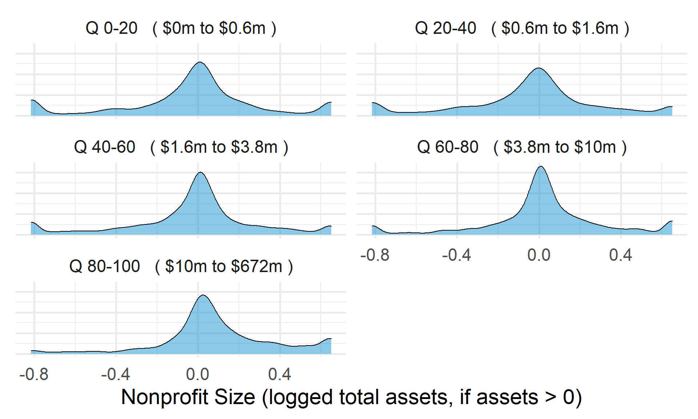
Post-Depreciation Profitability Margin by Nonprofit Age
ggplot( core2, aes(x = AGE )) +
geom_density( alpha = 0.5 ) 
core2$AGE[ core2$AGE < 1 ] <- NA
if( nrow(core2) > 10000 )
{
core3 <- sample_n( core2, 10000 )
} else
{
core3 <- core2
}
jplot( core3$AGE, core3$postd_profitmargin,
xlab="Nonprofit Age",
ylab=variable.label ) core2 %>%
filter( ! is.na(age.q) ) %>%
ggplot( aes(postd_profitmargin) ) +
geom_density( alpha = 0.5 ) +
labs( title="Nonprofit Age" ) +
xlab( variable.label ) +
ylab( "" ) +
facet_wrap( ~ age.q, nrow=3 ) +
theme_minimal( base_size = 22 ) +
theme( axis.title.y=element_blank(),
axis.text.y=element_blank(),
axis.ticks.y=element_blank() )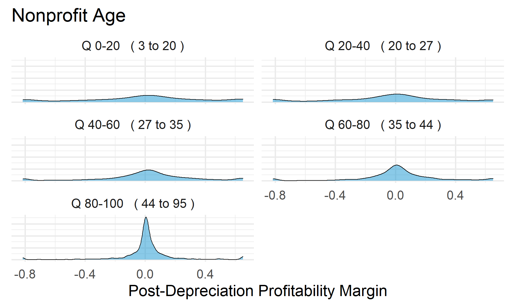
Post-Depreciation Profitability Margin by Land and Building Value
ggplot( core2, aes(x = lndbldgsequipend )) +
geom_density( alpha = 0.5 ) 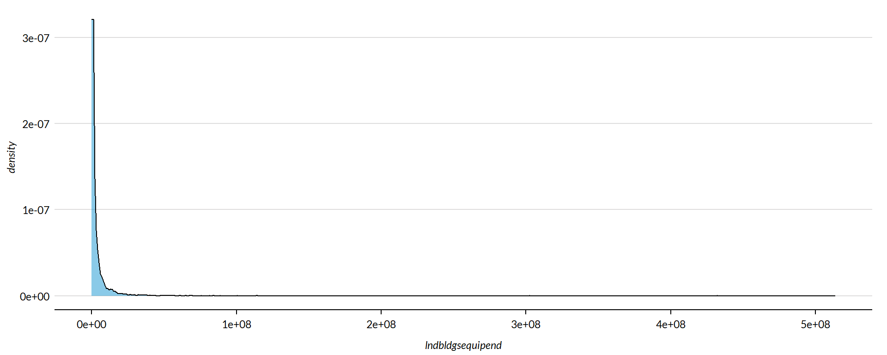
core2$lndbldgsequipend[ core2$lndbldgsequipend < 1 ] <- NA
if( nrow(core2) > 10000 )
{
core3 <- sample_n( core2, 10000 )
} else
{
core3 <- core2
jplot( log10(core3$lndbldgsequipend), core3$postd_profitmargin,
xlab="Land and Building Value (logged)",
ylab=variable.label,
xaxt="n", xlim=c(3,10) )
axis( side=1,
at=c(3,4,5,6,7,8,9,10),
labels=c("1k","10k","100k","1m","10m","100m","1b","10b") )
}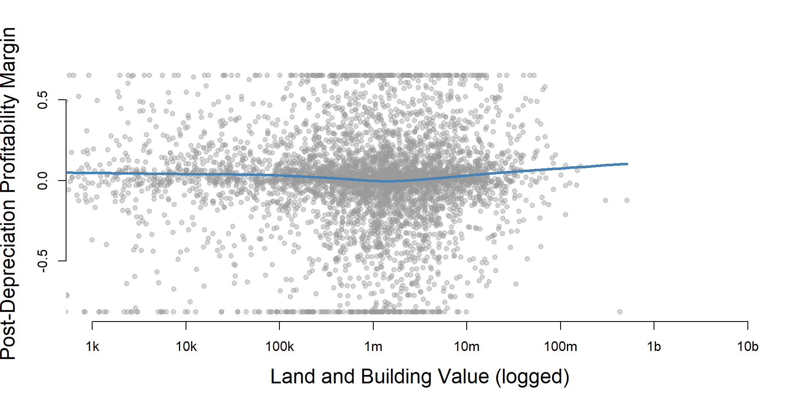
core2 %>%
filter( ! is.na(land.q) ) %>%
ggplot( aes(postd_profitmargin) ) +
geom_density( alpha = 0.5 ) +
labs( title="Land and Building Value" ) +
xlab( variable.label ) +
ylab( "" ) +
facet_wrap( ~ land.q, nrow=3 ) +
theme_minimal( base_size = 22 ) +
theme( axis.title.y=element_blank(),
axis.text.y=element_blank(),
axis.ticks.y=element_blank() )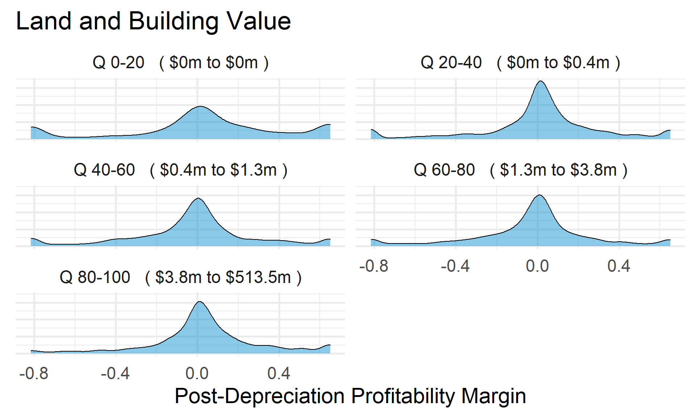
Save Metrics
core.postd_profitmargin <- select( core, ein, tax_pd, postd_profitmargin )
saveRDS( core.postd_profitmargin, "03-data-ratios/m-09-post-d-profit-margin.rds" )
write.csv( core.postd_profitmargin, "03-data-ratios/m-09-post-d-profit-margin.csv" )